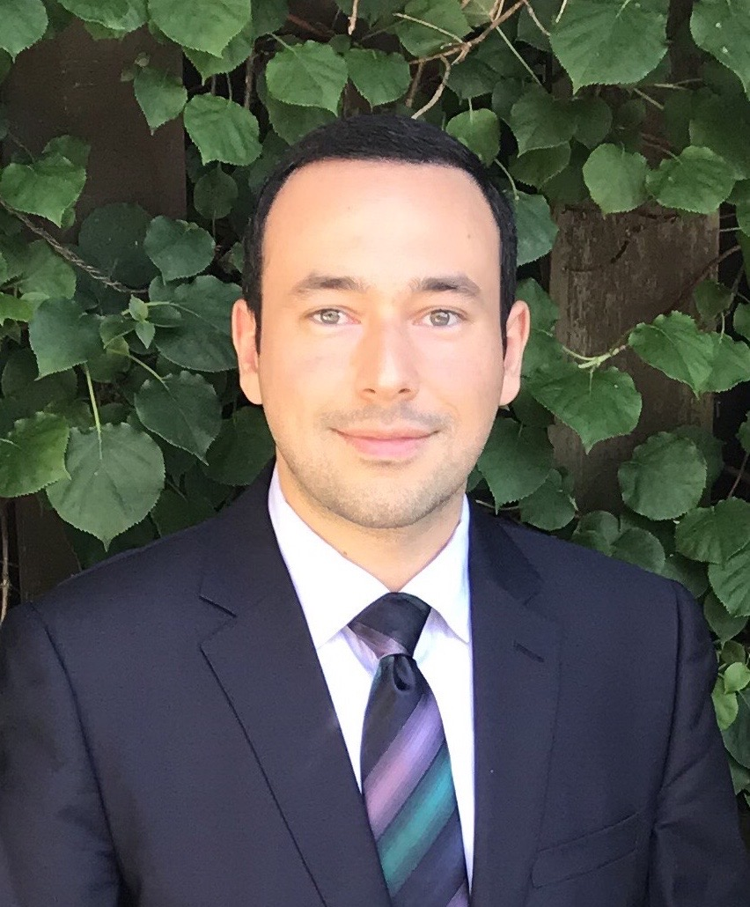
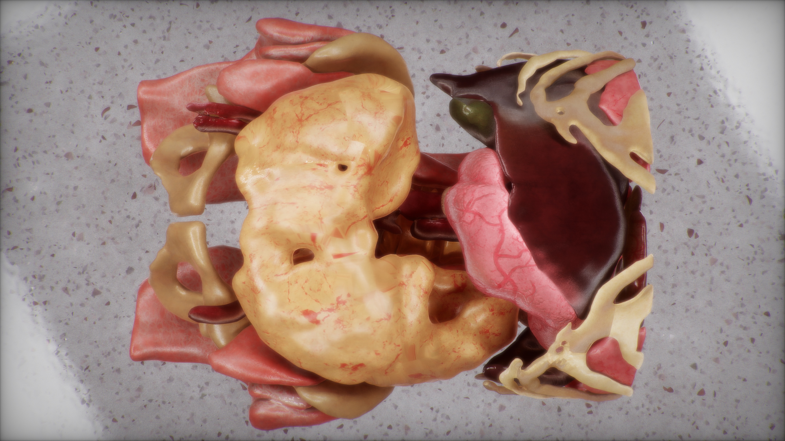
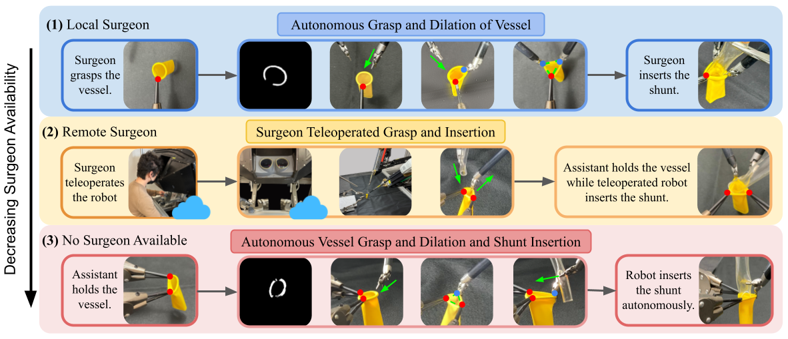

|
Masoud Moghani I am a PhD student at the University of Toronto, advised by Animesh Garg working at the intersection of robotics, machine learning, and simulation. My research focuses on robot learning for manipulation and deformable object simulation. I am also working on autonomy in surgical robotics. Email / Google Scholar / Twitter / YouTube / Github |
 |
{kind=link}
Publications |
|

|
SuFIA-BC: Generating High Quality Demonstration Data for Visuomotor Policy Learning in Surgical Subtasks
Masoud Moghani, Nigel Nelson, Mohamed Ghanem, Andres Diaz-Pinto, Kush Hari, Mahdi Azizian, Ken Goldberg, Sean Huver, Animesh Garg ICRA 2025: IEEE International Conference on Robotics and Automation, 2025 website / video Media Coverage: NVIDIA Developer SuFIA-BC, exploring visual behavior cloning policies in an enhanced surgical digital twin with photorealistic human anatomical organs. |

|
SuFIA: Language-Guided Augmented Dexterity for Robotic Surgical Assistants
Masoud Moghani, Lars Doorenbos, William Chung-Ho Panitch, Sean Huver, Mahdi Azizian, Ken Goldberg, Animesh Garg IROS 2024: IEEE/RSJ International Conference on Intelligent Robots and Systems, 2024 website / video / paper / pdf Media Coverage: New Scientist SuFIA, a framework for natural language-guided augmented dexterity for robotic surgical assistants. |

|
ORBIT-Surgical: An Open Simulation Framework for Accelerated Learning in Surgical Autonomy
Qinxi Yu*, Masoud Moghani*, Karthik Dharmarajan, Vincent Schorp, William Chung-Ho Panitch, Jingzhou Liu, Kush Hari, Huang Huang, Mayank Mittal, Ken Goldberg, Animesh Garg *Equal Contribution ICRA 2024: IEEE International Conference on Robotics and Automation, 2024 website / short video / long video / paper / pdf Media Coverage: NVIDIA Blog / NVIDIA Developer / Twitter (Masoud Moghani) / Twitter (Animesh Garg) / The Robot Report / The Decoder ORBIT-Surgical, a physics-based surgical robot simulation framework with photorealistic rendering. |
|  |
Robot-Assisted Vascular Shunt Insertion with the dVRK Surgical Robot
Karthik Dharmarajan, Will Panitch, Baiyu Shi, Huang Huang, Lawrence Yunliang Chen, Masoud Moghani, Qinxi Yu, Kush Hari, Thomas Low, Danyal Fer, Animesh Garg, Ken Goldberg JMRR 2023: Journal of Medical Robotics Research, 2023 website / paper A trimodal framework for vascular shunt insertion assisted by a da Vinci Research Kit (dVRK) robotic surgical assistant. |
|
A Small Steerable Tip Based on Dielectric Elastomer Actuators
Siyoung Lee, Masoud Moghani, Ang Li, Mihai Duduta RA-L 2023: IEEE Robotics and Automation Letters, 2023 paper A soft robotic approach for a steerable tip capable of guiding a small flexible insertion tube. |
|
|
A Lightweight Magnetorheological Actuator Using Hybrid Magnetization
Masoud Moghani, Mehrdad R. Kermani T-Mech 2019: IEEE/ASME Transactions on Mechatronics, 2019 paper / pdf The design and validation of a high-performance compliant actuator for robotic manipulators. |
|
|
Hysteresis Modeling of a Hybrid Magneto-Rheological Actuator
Masoud Moghani, Mehrdad R. Kermani AIM 2016: IEEE International Conference on Advanced Intelligent Mechatronics, 2016 paper A neural network based closed-loop torque control strategy for a compliant actuator. |
|
|
Design and Development of a Hybrid Magneto-Rheological Clutch for Safe Robotic Applications
Masoud Moghani, Mehrdad R. Kermani ICRA 2016: IEEE International Conference on Robotics and Automation, 2016 paper A novel compliant actuator for safe robotic applications. |
Teaching |
|
CSC413H1-2516H - Neural Networks and Deep Learning (TA)
MIE404H1 - Control Systems I (Co-lecturer, 2x - Head TA) ECE470H1 - Robot Modeling and Control (2x - TA) MIE505H1 - Micro/Nano Robotics (TA) ECE 4460B - Real Time Embedded Systems (2x - TA) |
|
Source code from Jon Barron website's source code. |